{kind=link}
Why?
I just wanted to attempt laser pumpkin carving. I'm not sure what happened.
Oh wait. Now I remember...
{kind=link}
It was John's idea. He helps film all the videos.
Download
Video Overview
Filming credit to John Willner
My idea was to build a wooden hat which the pumpkin fits over. Now that I think about it, that's basically the opposite of a hat. The pumpkin is a hat. Underneath the wood thing which looks like a hat but isn't a hat is a small RC car. In between the hat and the car is a thrust bearing made out of glass marbles.
I feel like this description is making things more confusing.
Maybe the wood thing is a hat since it fits over the RC car. The RC car is just wearing multiple hats.
I modeled a crude pumpkin; it's pumpkin textured too.
A thrift store cordless drill was dissected for it's gear motor and drive circuit.
Half of the gearbox was removed to fit inside the robot. I laser cut a gear to mesh with the new drill output.
My concern is this wooden gear is going to strip if the motor stops while the pumpkin is spinning. I built a clutch using the clutch spring from the now motorless cordless chuckless drillless thrift store drill.
This 12% worked, and the entire robot needed to be done by the next day, so I scrapped it.
My replacement solution mounted a rubber o-ring on the motor which rubbed against a disk to spin the pumpkin.
I couldn't find a suitable RC car to fit under the hat; so I built that too.
A friend suggested only using a single wheel and some skid pads. Getting rid of those gears was probably a good idea.
Yes, the drive wheels are wood.
This is the pumpkin I need to carve.
All of the pieces were laser cut, and assembled.
Now you may not have realized it, but there's only one joystick. I wanted tank style steering, but could only find one joystick laying around. During the car ride to fight Chomp I was literally searching for the math to mix a single joystick to two wheels. This isn't as easy as it seems.
I found this awesome post, which literally saved the day: Joystick to Tank Drive
PumpkinBot is alive!!!!!
Featured on Discovery Channel!
Design
PumpkinBot was haphazardly designed in SolidWorks.
I'll post a picture of my first terrible postit note sketch when I find it. The sketch looks like this:
 |
| Melon cat |
I found it.
| 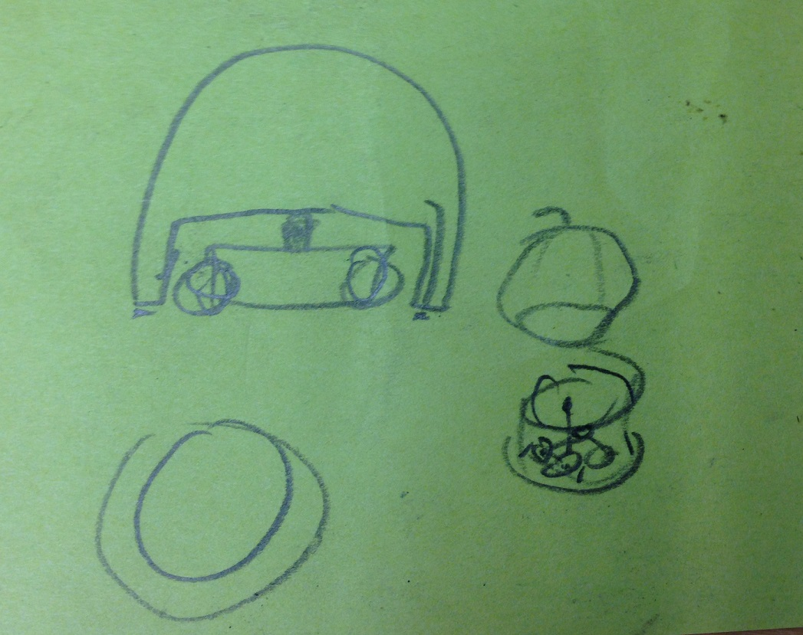 |
| Concept sketch |
{kind=link}
My idea was to build a wooden hat which the pumpkin fits over. Now that I think about it, that's basically the opposite of a hat. The pumpkin is a hat. Underneath the wood thing which looks like a hat but isn't a hat is a small RC car. In between the hat and the car is a thrust bearing made out of glass marbles.
I feel like this description is making things more confusing.
| 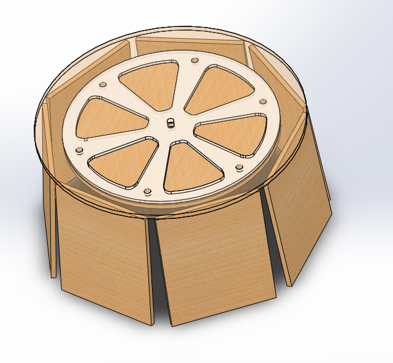 |
| Early PumpkinBot |
{kind=link}
| 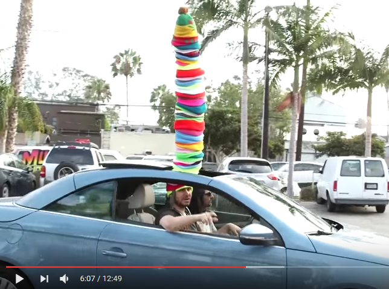 |
| https://youtu.be/TwArZLW3wbQ |
{kind=link}
| 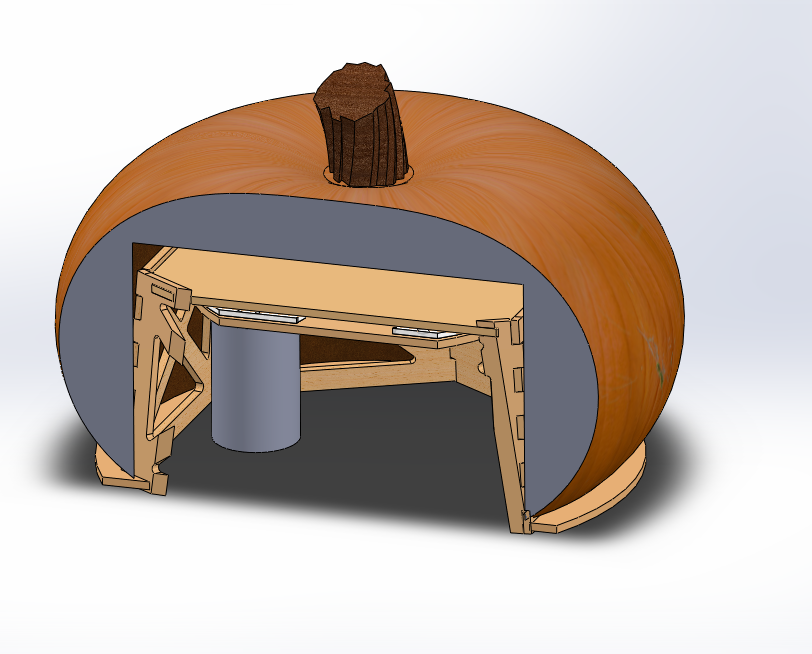 |
| CAD Pumpkin |
{kind=link}
| 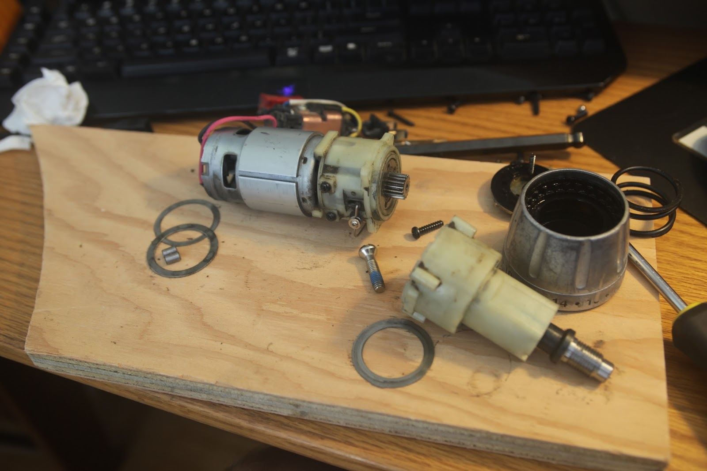 |
| Drill motor |
{kind=link}
| 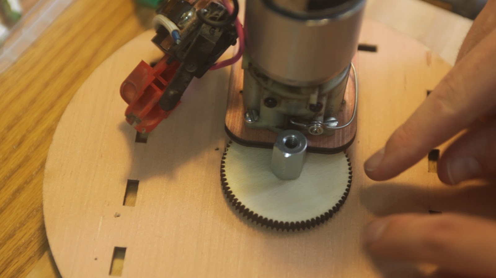 |
| Laser cut gear |
{kind=link}
| 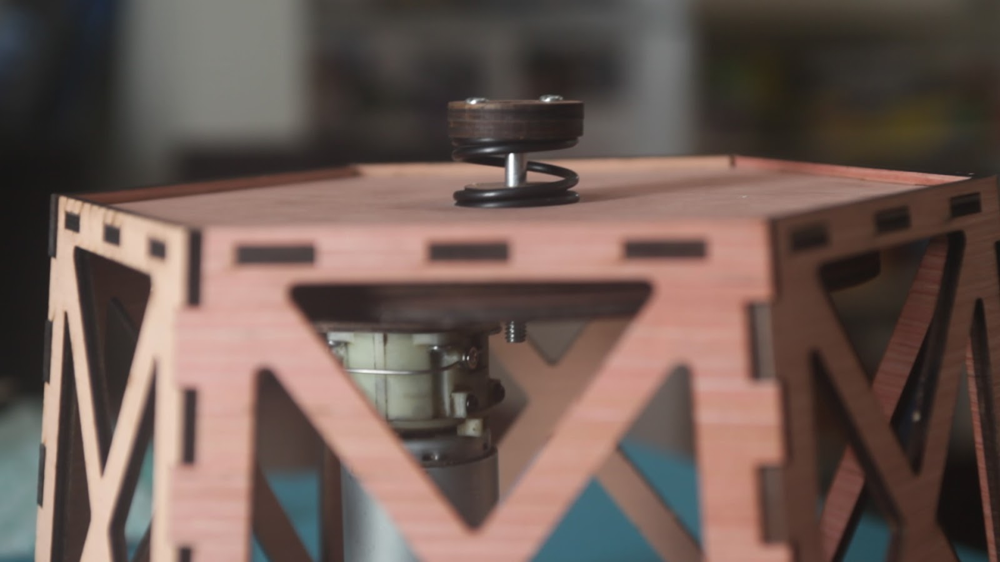 |
| Failed clutch |
{kind=link}
My replacement solution mounted a rubber o-ring on the motor which rubbed against a disk to spin the pumpkin.
| 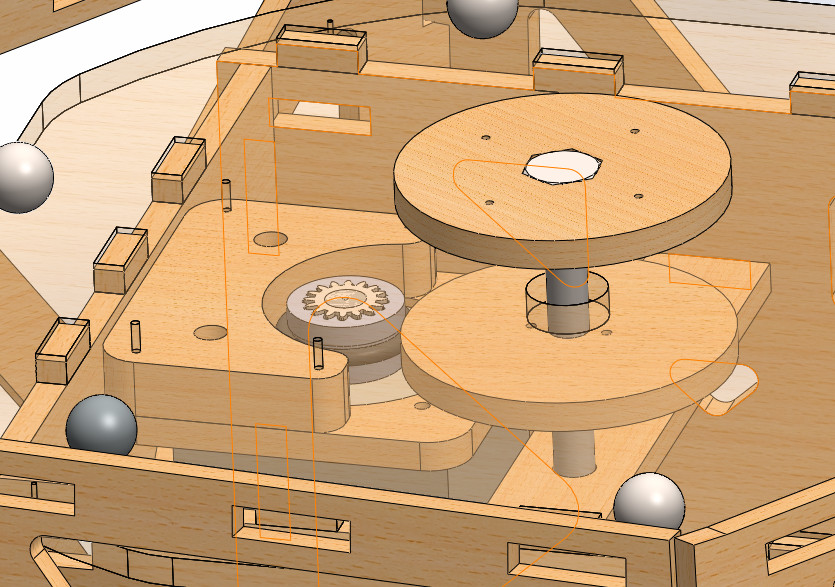 |
| O-ring drive |
{kind=link}
| 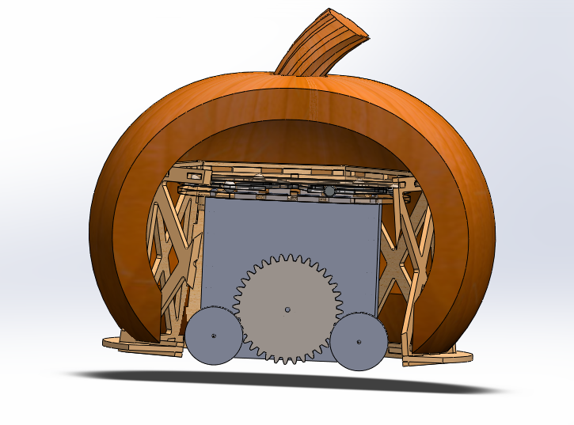 |
| RC car |
{kind=link}
| 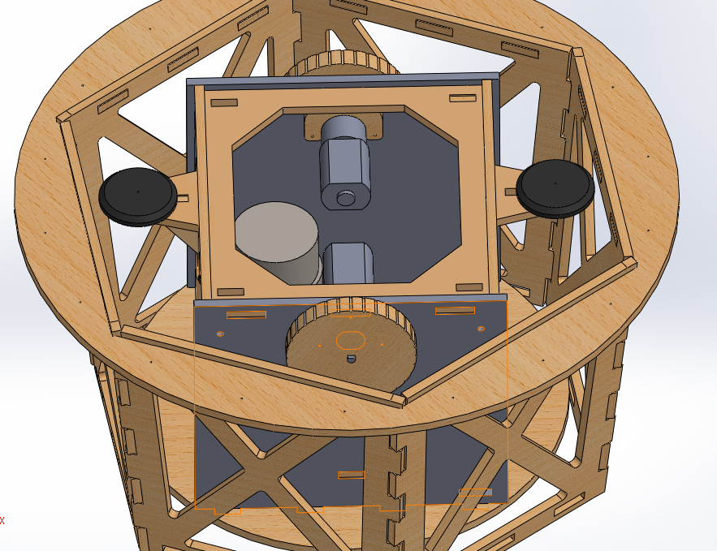 |
| Center wheels and skids |
{kind=link}
This is the pumpkin I need to carve.
| 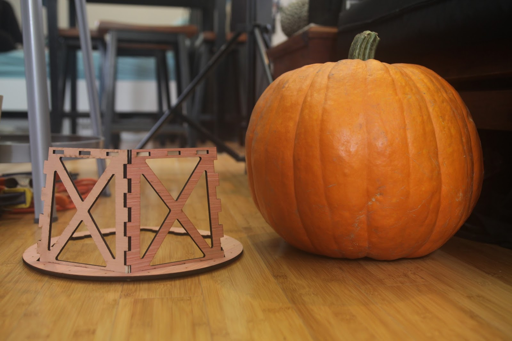 |
| Pumpkin |
{kind=link}
| 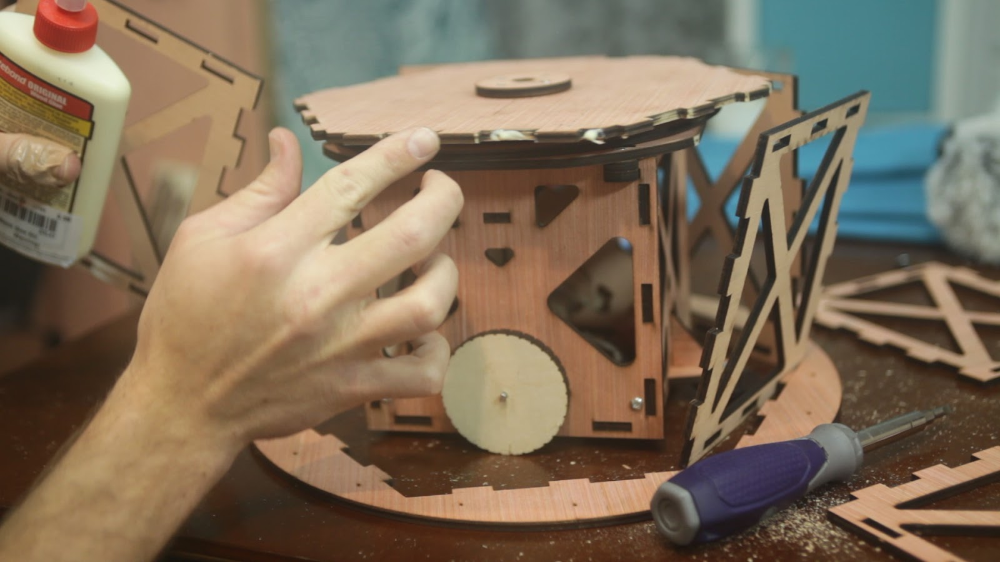 |
| Eating paste |
{kind=link}
Electronics
I did not document the electronics as well as I should have. I literally built them the morning of my fight with Chomp.
An Arduino Pro Mini controls the motors and nrf24l01 transceiver. This board is stolen from a previous project.
| 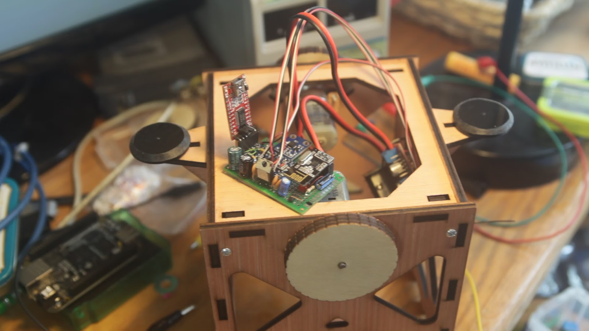 |
| Bot Arduino |
{kind=link}
The remote is very similar. I went full jank.
| 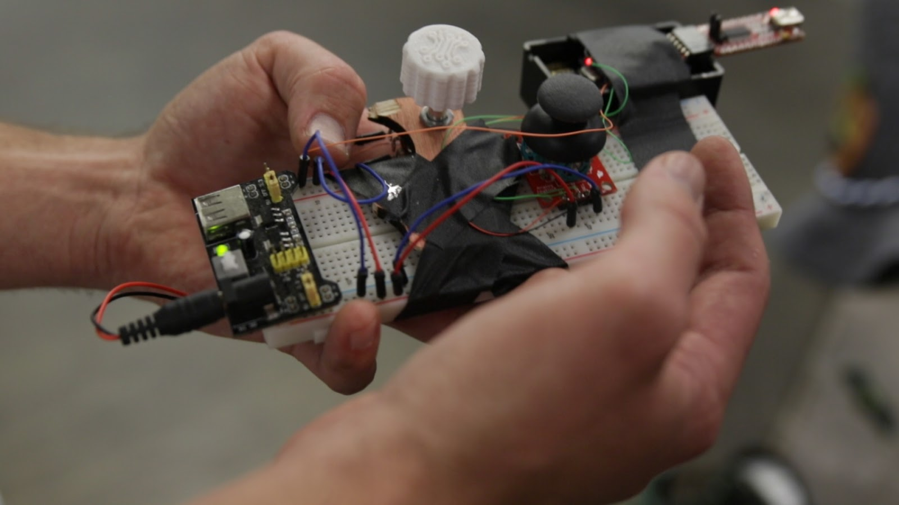 |
| PumpkinBot's remote |
{kind=link}
I hijacked the drill's mosfet and freewheeling diode to control the drill motor from one of the Arduino's PWM pins.
| 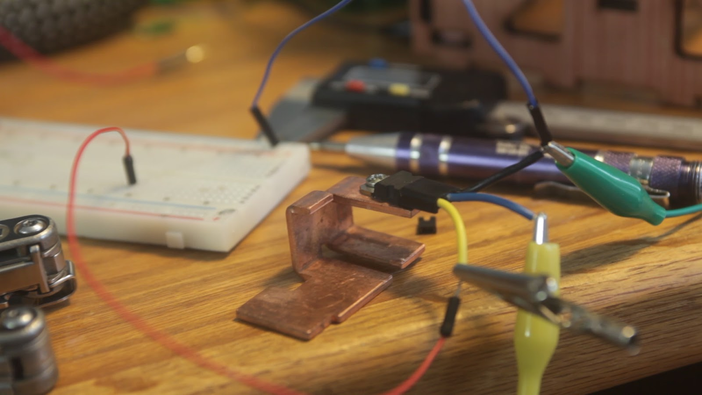 |
| Drill mosfet |
{kind=link}
The wheels were driven with a single cheap Chinese h bridge board.
 |
| much quality wow |
I found this awesome post, which literally saved the day: Joystick to Tank Drive
PumpkinBot is alive!!!!!
Testing
HAHAHAHAHAHAH
Aftermath
You can probably guess how the fight went.
| 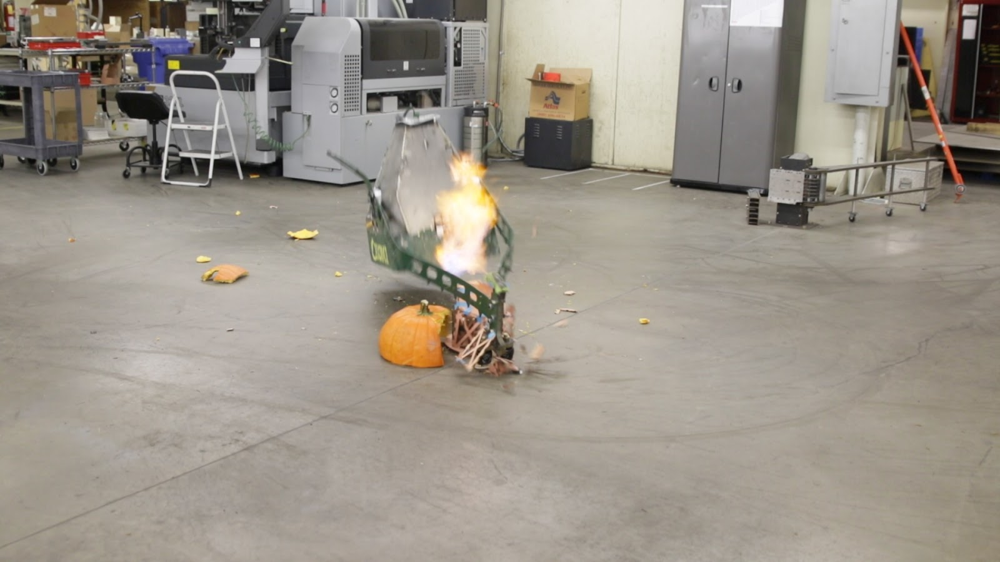 |
| Chomp Smash! |
{kind=link}
Ouch
| 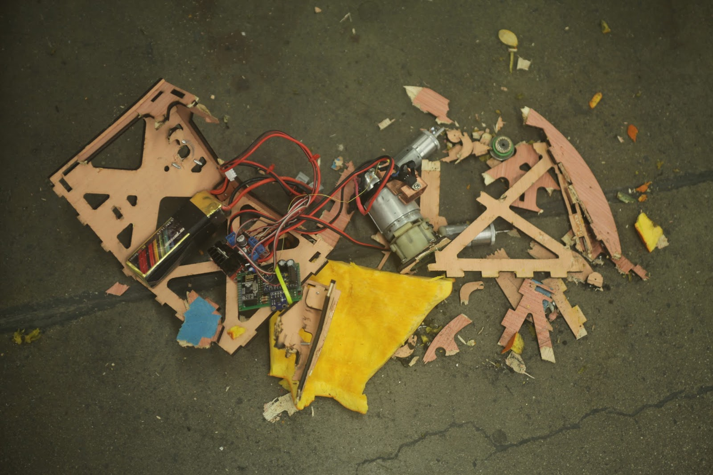 |
| Battle aftermath |
{kind=link}
Conclusion
I spent a lot of time building Chomp fodder.
The most trouble I had was with the nordic transceivers. I've used them with lots of luck in the past, but it took me a solid 2 hours of freaking out the morning of to 'fix' the problem.
My biggest mistake was using the o-ring drive. I kept tearing the o-rings up, and was barley able to get the 'hat' spinning with the pumpkin. I really should have meshed a non-wood gear to the gearbox without a clutch. Something stronger than wood would be able to backdrive the motor.
| 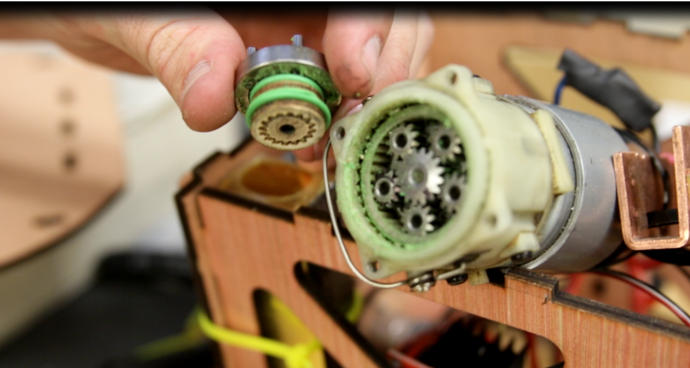 |
| Burning rubber |
{kind=link}
The End
That's it. I don't think I'll be building another combat robot for a bit.
The tab and slot design seem pretty tight. That's awesome! How do you deal with laser kerf (and can you point me toward where to learn)?
ReplyDeleteI'm a bit new to laser cutting.
mann you are my idol
ReplyDelete